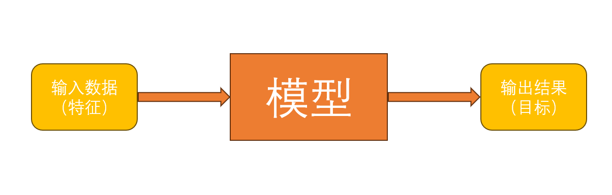
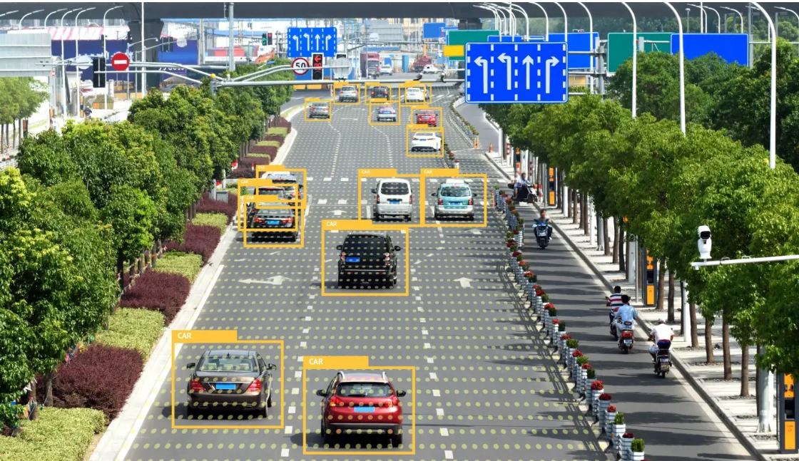
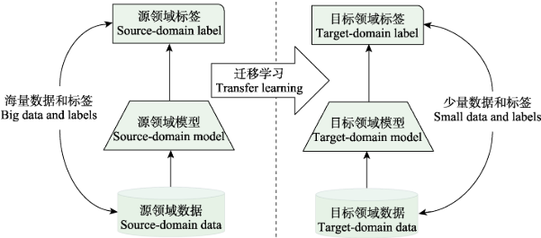
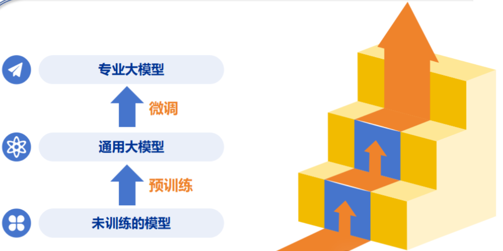
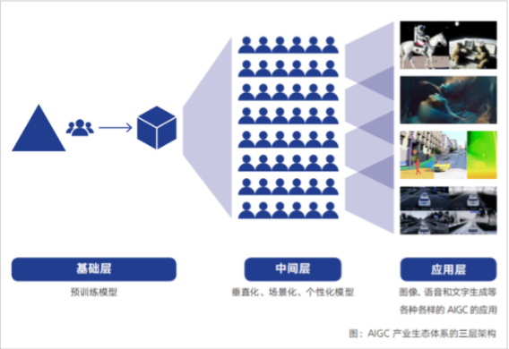
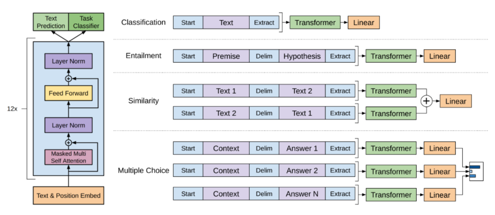

1.2 微调的阶段¶
1.什么是模型？¶
通俗的理解，模型的核心功能在于描述 输入数据 与 输出结果 之间的关系，并把这个关系变成一个可以反复使用的工具。也就是说，模型就是机器学习算法从 数据 中 学 到的一个“ 规律 ”，然后把这个“规律”保存下来，变成一个可以反复使用的 工具 。

案例1：房价预测
- 需求：帮助购房者、房产投资者以及开发商，依据房屋各项特征准确预估房屋售价，辅助购房决策、投资规划与定价策略制定。
- 输入数据：房屋面积（平方米）、房间数量（个）、楼层数、所在小区平均房价（元/平方米）、到最近地铁站距离（米）、周边学校数量（所）、建成年份。
- 输出结果：房屋预测销售价格（元）。
- 训练集（学习）数据量：至少需要 1000 条房屋数据记录，数据量过少可能导致模型无法准确学习到特征与房价之间的复杂关系。
案例2：图像分类
- 需求：在安防监控中识别异常物体，自动驾驶场景中识别交通标志等，实现图像中的目标检测。

-
输入数据：从摄像头中获取的图像。
-
输出结果：图像中物体的类别标签，如“汽车”，“交通标识”，“行人”等。
-
训练集（学习）数据量：对于复杂的安防或自动驾驶相关任务，由于任务复杂，需要 100000 张甚至更多的图像数据来训练模型。
案例3：用户评论情感分析
- 需求：企业通过分析用户在产品评论、社交媒体帖子中的情感倾向，了解用户对产品或服务的满意度，以便改进产品和服务、制定营销策略。
- 输入数据：用户评论文本，例如“这款手机外观时尚，运行流畅，非常满意！”
- 输出结果：评论的情感倾向标签，如“积极”“消极”“中性”。
- 训练集（学习）数据量：至少需要 10000 条标注好情感倾向的评论文本。如果评论涉及的专业领域较多或语言风格复杂，可能需要 20000 条以上的数据来训练模型。
案例4：对话系统
- 需求：构建智能客服、智能助手等对话系统，实现与用户的自然语言交互，完成问答、闲聊、任务办理等功能
-
输入数据：用户提出的问题，例如“请问附近有什么好吃的餐厅？”
-
输出结果：模型根据用户问题回复文本，例如“附近有几家口碑不错的餐厅，像云海肴主打云南菜菜，绿茶餐厅的西餐很受欢迎。”
- 训练集（学习）数据量：预训练阶段需要海量的文本数据，通常以 TB 为单位计算，涵盖各种领域的文本。微调阶段，对于特定的对话任务，至少需要 10000 - 50000 条对话数据对，如果对话场景复杂或需要更高的回复质量，可能需要 100000 条以上的数据。
2.什么是模型微调？¶
简单来说，模型微调就是迁移学习在深度学习中的一种核心技术。迁移学习的主要思想是将从一个领域（源领域）学习到的知识、经验或技能，应用到另一个相关但不同的领域（目标领域）中，以解决目标领域中数据不足、标注成本高或任务相似但环境不同等问题，核心在于实现知识的有效迁移与再利用。

模型微调 是实现迁移学习领域中最主流、最有效的技术。这种迁移学习方法主要包含两个阶段：
预训练： 预训练模型是在源领域（通常是数据丰富、任务相似的领域）上进行大规模训练得到的，它已经学习到了通用的特征表示和知识，在NLP领域中就包括语法、句法、基础语义和部分常识等内容。
微调： 模型微调则是将这些从源领域学到的知识迁移到目标领域（即我们要解决的具体任务领域）的过程。通过在目标领域的数据上对预训练模型的参数进行微调，使模型能够更好地适应目标任务。

我们把上述大模型的学习训练过程类比于人类的学习过程：
预训练就是人类从小学到中学生的成长，在这个阶段我们会学习各种各样的知识，语言习惯、知识体系等重要部分都会形成；对于大模型来说，在这个阶段它会学习各种不同种类的语料，学习到语言的统计规律和一般知识。
微调就像中学生升入大学，在这个阶段我们会学习到专业知识，比如金融、法律等领域，我们的头脑会更专注于特定领域。对于大模型来说，在这个阶段它可以学习各种人类的对话语料，甚至是非常专业的垂直领域知识，在微调之后，它可以按照人类的意图去回答专业领域的问题。
2.1. 预训练模型¶
预训练模型是指已经在大量数据上训练过的模型，这些数据通常是通用的、广泛的语料库或数据集。预训练模型的目标是通过在大规模数据上学习丰富的特征表示，使得它们能够在多种下游任务中应用。
预训练模型通常具备以下特点：
- 大规模训练：预训练模型通常是在大规模数据集上进行训练，如 Wikipedia、Common Crawl、BooksCorpus 等，学习到的表示能够捕捉丰富的语法和语义信息。
- 通用性：由于预训练模型通常是在多样化的任务或数据集上训练的，它们的表示非常通用，可以应用到多种任务中，而不需要从头开始训练。
在NLP领域，预训练模型往往是语言模型。因为语言模型的训练是无监督的，可以获得大规模语料，同时语言模型又是许多典型NLP任务的基础，如机器翻译，文本生成，阅读理解等。
2.2. 模型微调¶
微调是指将预训练模型应用到特定任务的数据集上，并调整模型的参数，使其更好地适应新任务。通常是使用新任务的数据集继续训练预训练模型，让模型学习特定任务的特征。
微调的作用是：
-
保留通用知识 ：在自然语言处理领域，预训练模型已经学到了强大的语言表征能力，包括语法、句法、基础语义和部分常识。假设我们要训练一个模型来识别电影评论中的情感倾向（积极或消极）。使用预训练模型进行微调，它已经知道“喜欢”“精彩”等词通常表示积极的情感，“讨厌”“糟糕”等词表示消极的情感，我们只需要在电影评论数据上对模型进行一些调整，就能快速得到一个准确的情感分类模型。
-
注入领域知识 ：虽然预训练模型学到了很多通用知识，但不同领域的数据分布和任务目标可能差异很大。这时候，就需要在特定领域的小规模数据集上进行有监督训练。这个特定领域的数据集就像是给模型的一本“专属教材”，它包含了该领域特有的信息和模式。
大模型的产品形态丰富多样，根据不同层级有着清晰的划分，主要包括基础层、中间层和应用层这三个关键层次。

基础层作为大模型产品形态的基石，主要由少数行业头部企业或研发机构主导构建。
中间层虽不具备开发大模型的能力，对开源大模型进行微调，专注于打造基于大模型的场景化、垂直化、定制化应用模型或工具。
应用层则处于大模型产品形态的最前端，直接面向C端用户。通过网页、小程序、群聊、app等多样化的载体呈现，为用户带来便捷、智能的使用体验，推动大模型技术的广泛应用。
3.常用的预训练模型及其微调方法¶
3.1 AE模型（BERT模型）¶
BERT（Bidirectional Encoder Representations from Transformers）是由Google于2018年10月提出的一种基于Transformer的预训练语言模型。它在NLP任务中取得了突破性的成果，极大地提升了模型在问答、文本分类等任务上的表现。
Bert模型适合用于语言表达, 语言理解方面的任务, 不适合用于生成式的任务。
3.1.1 BERT的预训练¶
BERT包含两个预训练任务:
任务一 : Masked Language Model (MLM：带mask的语言模型训练)
在原始训练文本中, 随机的抽取15%的token作为参与MASK任务的对象
在这些被选中的token中, 数据生成器并不是把它们全部变成[MASK], 而是有下列3种情况：
- 在80%的概率下, 用[MASK]标记替换该token, 比如my dog is hairy -> my dog is [MASK]
- 在10%的概率下, 用一个随机的单词替换token, 比如my dog is hairy -> my dog is apple
- 在10%的概率下, 保持该token不变, 比如my dog is hairy -> my dog is hairy
模型在训练的过程中, 模型快速学习该token的分布式上下文的语义, 尽最大努力学习原始语言说话的样子。同时因为原始文本中只有15%的token参与了MASK操作, 并不会破坏原语言的表达能力和语言规则。
任务二 : Next Sentence Prediction (NSP：下一句话预测任务)
输入句子对(A, B), 模型来预测句子B是不是句子A的真实的下一句话。
所有参与任务训练的语句都被选中作为句子A.
- 其中50%的B是原始文本中真实跟随A的下一句话.
- 其中50%的B是原始文本中随机抽取的一句话.
- 模型预测第二个句子是否是第一个句子的下一句，输出是一个二分类标签
3.1.2 BERT微调¶
对于不同的任务, 几种重要的NLP微调任务架构图展示如下

a：句子对任务
- 输入：
[CLS] + 句子1 + [SEP] + 句子2 + [SEP] - 输出：
[CLS]标记的隐藏状态经过一个全连接层，输出分类结果（如是否相似）。
b：文本分类
- 输入：
[CLS] + 句子 + [SEP] - 输出：
[CLS]标记的隐藏状态经过一个全连接层，输出类别概率。
c：问答任务 (QA)
- 输入：
[CLS] + 问题 + [SEP] + 段落 + [SEP] - 输出：模型预测答案在段落中的起始和结束位置。
d：命名体识别（NER）
- 输入：
[CLS] + 句子 + [SEP] - 输出：每个单词的隐藏状态经过一个分类层，输出实体标签（如人名、地名）。
3.2 AR模型（GPT模型）¶
GPT是大模型的典型代表，采用 无监督预训练 + 有监督微调 的方式，适用于 自然语言生成（NLG） 任务。
GPT模型是在Google BERT模型之前提出的, 与BERT最大的区别在于GPT采用了传统的语言模型方法进行预训练, 即使用单词的上文来预测单词, 而BERT是采用了双向上下文的信息共同来预测单词。正是因为训练方法上的区别, 使得GPT更擅长处理自然语言生成任务(NLG), 而BERT更擅长处理自然语言理解任务(NLU)。
3.2.1 GPT的预训练¶
GPT的预训练方法基于自回归（autoregressive）原理，即根据已知的上下文预测下一个词的概率。通过在大规模文本数据上训练模型，使其能够捕捉到语言的统计规律和语义信息，从而生成连贯、有意义的文本。
3.2.2 GPT的微调¶
GPT经过预训练后, 会针对具体的下游任务对模型进行微调.

GPT大模型微调包含分类任务、蕴含任务、相似度任务和多选任务，具体内容如下：
a: 分类任务
- 给定一段文本，输出分类结果，如情感分类。
- 输入：在给定文本首尾分别添加token“Start/Extract”，送入GPT模型。
- 输出：经过一个全连接层，输出类别概率
b: 蕴含任务
- 给定两段文本，判断前者对后者的关系，如判断第一句对第二句是蕴含、不蕴含还是无关。
- 输入：在两个句子中间添加分割符“Delim”，再在整个文本首尾加上“Start/Extract”，送入GPT模型。
- 输出：经过一个全连接层，输出类别概率
c: 相似度任务（对称性句子关系任务）
- 给定两段文本，判断二者关系，如判断两个句子是否相似。
- 输入：将两个句子分别作为前句或后句，构造两个完整文本，各自送入GPT模型。
- 输出：经过一个全连接层，输出类别概率
d: 多选任务
- 给定一段文本和多个答案，判断哪个正确。
- 输入：将给定文本和N个答案结合，构造N个完整文本，各自送入GPT模型。
- 输出：经过一个全连接层，输出类别概率
4.总结¶
1 .什么是模型？
模型是从数据中学习到的“规律”，用于描述输入与输出之间的关系。
2 . 什么是模型微调？
微调是迁移学习的一种技术，将预训练模型的知识迁移到特定任务上。
- 预训练：在大规模通用数据上训练，学习通用特征（如语言规律）。
- 微调：在特定任务数据上继续训练，使模型适应具体领域。
3 . BERT模型（AE模型） ： 适合文本理解
预训练任务：
- MLM：随机掩盖部分词，让模型预测。
- NSP：预测两个句子是否连续。
微调任务：
- 句子对分类、文本分类、问答、命名实体识别等。
4 . GPT模型（AR模型） :自然语言生成（NLG）
预训练方法：根据上文预测下一个词。
微调任务：
- 文本分类、蕴含判断、相似度计算、多选任务等。
通过预训练和微调，模型可以更好地服务于具体业务场景。